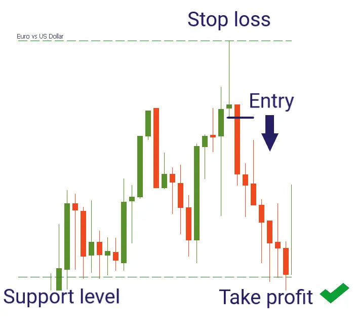

சூட்டிங் ஸ்டார் முறைய் என்பது ஒரு வர்த்தக முறையானது, இது பங்குச் சந்தையில் மேல்
நோக்கும் சைவளவில்லாமல் மற்றும் கீழ் நோக்கும் சைவதை குறிக்கும்.
இந்த முறைய் ஒரே ஒரு மொழிவழக்கரால் உருவாக்கப்படுகிறது.
இது சிறிய நீள கீழ்முகத்தே மொழிவழக்கரின் மூலம் அதன் துவங்கிய விலைக்கு
அருகில் முடிவடைகிறது.
ஷூட்டிங் ஸ்டர் முறையானது ஏற்குறைந்த கீழ் சுழற்சியை குறிக்கும். இந்த முறையை கண்டால்,
பங்குச் சந்தையில் கீழ் சுழற்சிக்குச் சிக்னல் வழங்கும் வர்த்தகாளர்கள் உள்ளனர்.
